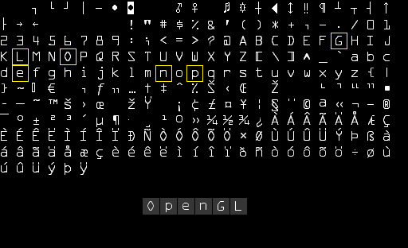
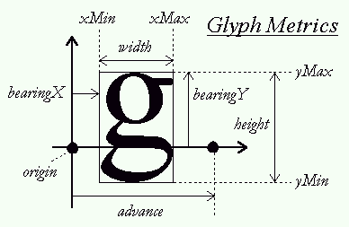
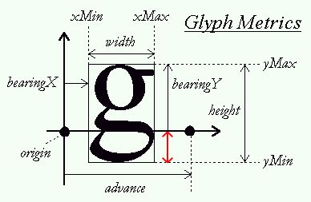
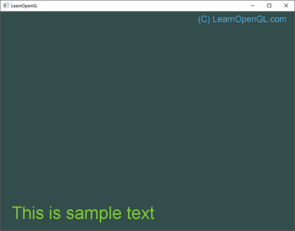
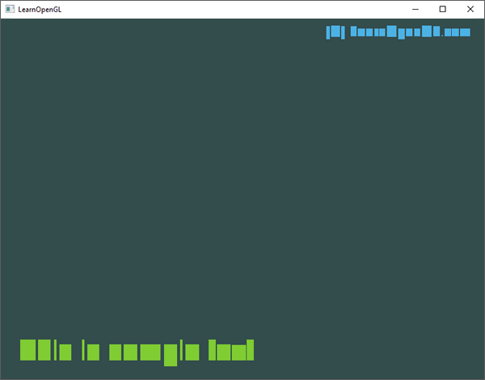

Text Rendering
In-Practice/Text-Rendering
At some stage of your graphics adventures you will want to draw text in OpenGL. Contrary to what you may expect, getting a simple string to render on screen is all but easy with a low-level API like OpenGL. If you don't care about rendering more than 128 different same-sized characters, then it's probably not too difficult. Things are getting difficult as soon as each character has a different width, height, and margin. Based on where you live, you may also need more than 128 characters, and what if you want to express special symbols for like mathematical expressions or sheet music symbols, and what about rendering text from top to bottom? Once you think about all these complicated matters of text, it wouldn't surprise you that this probably doesn't belong in a low-level API like OpenGL.
Since there is no support for text capabilities within OpenGL, it is up to us to define a system for rendering text to the screen. There are no graphical primitives for text characters, we have to get creative. Some example techniques are: drawing letter shapes via GL_LINES, create 3D meshes of letters, or render character textures to 2D quads in a 3D environment.
Most developers choose to render character textures onto quads. Rendering textured quads by itself shouldn't be too difficult, but getting the relevant character(s) onto a texture could prove challenging. In this chapter we'll explore several methods and implement a more advanced, but flexible technique for rendering text using the FreeType library.
Classical text rendering: bitmap fonts
In the early days, rendering text involved selecting a font (or create one yourself) you'd like for your application and extracting all relevant characters out of this font to place them within a single large texture. Such a texture, that we call a

Here you can see how we would render the text 'OpenGL' by taking a bitmap font and sampling the corresponding glyphs from the texture (carefully choosing the texture coordinates) that we render on top of several quads. By enabling blending and keeping the background transparent, we will end up with just a string of characters rendered to the screen. This particular bitmap font was generated using Codehead's Bitmap Font Generator.
This approach has several advantages and disadvantages. It is relatively easy to implement and because bitmap fonts are pre-rasterized, they're quite efficient. However, it is not particularly flexible. When you want to use a different font, you need to recompile a complete new bitmap font and the system is limited to a single resolution; zooming will quickly show pixelated edges. Furthermore, it is limited to a small character set, so Extended or Unicode characters are often out of the question.
This approach was quite popular back in the day (and still is) since it is fast and works on any platform, but as of today more flexible approaches exist. One of these approaches is loading TrueType fonts using the FreeType library.
Modern text rendering: FreeType
FreeType is a software development library that is able to load fonts, render them to bitmaps, and provide support for several font-related operations. It is a popular library used by Mac OS X, Java, PlayStation, Linux, and Android to name a few. What makes FreeType particularly attractive is that it is able to load TrueType fonts.
A TrueType font is a collection of character glyphs not defined by pixels or any other non-scalable solution, but by mathematical equations (combinations of splines). Similar to vector images, the rasterized font images can be procedurally generated based on the preferred font height you'd like to obtain them in. By using TrueType fonts you can easily render character glyphs of various sizes without any loss of quality.
FreeType can be downloaded from their website. You can choose to compile the library yourself or use one of their precompiled libraries if your target platform is listed. Be sure to link to freetype.lib and make sure your compiler knows where to find the header files.
Then include the appropriate headers:
#include <ft2build.h>
#include FT_FREETYPE_H
#include <FreeType/ft2build.h> will likely cause several header conflicts.
FreeType loads these TrueType fonts and, for each glyph, generates a bitmap image and calculates several metrics. We can extract these bitmap images for generating textures and position each character glyph appropriately using the loaded metrics.
To load a font, all we have to do is initialize the FreeType library and load the font as a arial.ttf TrueType font file that was copied from the Windows/Fonts directory:
FT_Library ft;
if (FT_Init_FreeType(&ft))
{
std::cout << "ERROR::FREETYPE: Could not init FreeType Library" << std::endl;
return -1;
}
FT_Face face;
if (FT_New_Face(ft, "fonts/arial.ttf", 0, &face))
{
std::cout << "ERROR::FREETYPE: Failed to load font" << std::endl;
return -1;
}
Each of these FreeType functions returns a non-zero integer whenever an error occurred.
Once we've loaded the face, we should define the pixel font size we'd like to extract from this face:
FT_Set_Pixel_Sizes(face, 0, 48);
The function sets the font's width and height parameters. Setting the width to 0 lets the face dynamically calculate the width based on the given height.
A FreeType face hosts a collection of glyphs. We can set one of those glyphs as the active glyph by calling
if (FT_Load_Char(face, 'X', FT_LOAD_RENDER))
{
std::cout << "ERROR::FREETYTPE: Failed to load Glyph" << std::endl;
return -1;
}
By setting FT_LOAD_RENDER as one of the loading flags, we tell FreeType to create an 8-bit grayscale bitmap image for us that we can access via face->glyph->bitmap.
Each of the glyphs we load with FreeType however, do not have the same size (as we had with bitmap fonts). The bitmap image generated by FreeType is just large enough to contain the visible part of a character. For example, the bitmap image of the dot character '.' is much smaller in dimensions than the bitmap image of the character 'X'. For this reason, FreeType also loads several metrics that specify how large each character should be and how to properly position them. Next is an image from FreeType that shows all of the metrics it calculates for each character glyph:

Each of the glyphs reside on a horizontal
- width: the width (in pixels) of the bitmap accessed via
face->glyph->bitmap.width. - height: the height (in pixels) of the bitmap accessed via
face->glyph->bitmap.rows. - bearingX: the horizontal bearing e.g. the horizontal position (in pixels) of the bitmap relative to the origin accessed via
face->glyph->bitmap_left. - bearingY: the vertical bearing e.g. the vertical position (in pixels) of the bitmap relative to the baseline accessed via
face->glyph->bitmap_top. - advance: the horizontal advance e.g. the horizontal distance (in 1/64th pixels) from the origin to the origin of the next glyph. Accessed via
face->glyph->advance.x.
We could load a character glyph, retrieve its metrics, and generate a texture each time we want to render a character to the screen, but it would be inefficient to do this each frame. We'd rather store the generated data somewhere in the application and query it whenever we want to render a character. We'll define a convenient struct that we'll store in a
struct Character {
unsigned int TextureID; // ID handle of the glyph texture
glm::ivec2 Size; // Size of glyph
glm::ivec2 Bearing; // Offset from baseline to left/top of glyph
unsigned int Advance; // Offset to advance to next glyph
};
std::map<char, Character> Characters;
For this chapter we'll keep things simple by restricting ourselves to the first 128 characters of the ASCII character set. For each character, we generate a texture and store its relevant data into a
glPixelStorei(GL_UNPACK_ALIGNMENT, 1); // disable byte-alignment restriction
for (unsigned char c = 0; c < 128; c++)
{
// load character glyph
if (FT_Load_Char(face, c, FT_LOAD_RENDER))
{
std::cout << "ERROR::FREETYTPE: Failed to load Glyph" << std::endl;
continue;
}
// generate texture
unsigned int texture;
glGenTextures (1, &texture);
glBindTexture (GL_TEXTURE_2D, texture);
glTexImage2D (
GL_TEXTURE_2D,
0,
GL_RED,
face->glyph->bitmap.width,
face->glyph->bitmap.rows,
0,
GL_RED,
GL_UNSIGNED_BYTE,
face->glyph->bitmap.buffer
);
// set texture options
glTexParameter i(GL_TEXTURE_2D, GL_TEXTURE_WRAP_S, GL_CLAMP_TO_EDGE);
glTexParameter i(GL_TEXTURE_2D, GL_TEXTURE_WRAP_T, GL_CLAMP_TO_EDGE);
glTexParameter i(GL_TEXTURE_2D, GL_TEXTURE_MIN_FILTER, GL_LINEAR);
glTexParameter i(GL_TEXTURE_2D, GL_TEXTURE_MAG_FILTER, GL_LINEAR);
// now store character for later use
Character character = {
texture,
glm::ivec2(face->glyph->bitmap.width, face->glyph->bitmap.rows),
glm::ivec2(face->glyph->bitmap_left, face->glyph->bitmap_top),
face->glyph->advance.x
};
Characters.insert(std::pair<char, Character>(c, character));
}
Within the for loop we list over all the 128 characters of the ASCII set and retrieve their corresponding character glyphs. For each character: we generate a texture, set its options, and store its metrics. What is interesting to note here is that we use GL_RED as the texture's internalFormat and format arguments. The bitmap generated from the glyph is a grayscale 8-bit image where each color is represented by a single byte. For this reason we'd like to store each byte of the bitmap buffer as the texture's single color value. We accomplish this by creating a texture where each byte corresponds to the texture color's red component (first byte of its color vector). If we use a single byte to represent the colors of a texture we do need to take care of a restriction of OpenGL:
glPixelStorei(GL_UNPACK_ALIGNMENT, 1);
OpenGL requires that textures all have a 4-byte alignment e.g. their size is always a multiple of 4 bytes. Normally this won't be a problem since most textures have a width that is a multiple of 4 and/or use 4 bytes per pixel, but since we now only use a single byte per pixel, the texture can have any possible width. By setting its unpack alignment to 1 we ensure there are no alignment issues (which could cause segmentation faults).
Be sure to clear FreeType's resources once you're finished processing the glyphs:
FT_Done_Face(face);
FT_Done_FreeType(ft);
Shaders
To render the glyphs we'll be using the following vertex shader:
#version 330 core
layout (location = 0) in vec4 vertex; // <vec2 pos, vec2 tex>
out vec2 TexCoords;
uniform mat4 projection;
void main()
{
gl_Position = projection * vec4(vertex.xy, 0.0, 1.0);
TexCoords = vertex.zw;
}
We combine both the position and texture coordinate data into one
#version 330 core
in vec2 TexCoords;
out vec4 color;
uniform sampler2D text;
uniform vec3 textColor;
void main()
{
vec4 sampled = vec4(1.0, 1.0, 1.0, texture(text, TexCoords).r);
color = vec4(textColor, 1.0) * sampled;
}
The fragment shader takes two uniforms: one is the mono-colored bitmap image of the glyph, and the other is a color uniform for adjusting the text's final color. We first sample the color value of the bitmap texture. Because the texture's data is stored in just its red component, we sample the r component of the texture as the sampled alpha value. By varying the output color's alpha value, the resulting pixel will be transparent for all the glyph's background colors and non-transparent for the actual character pixels. We also multiply the RGB colors by the textColor uniform to vary the text color.
We do need to enable blending for this to work though:
glEnable (GL_BLEND);
glBlendFunc (GL_SRC_ALPHA, GL_ONE_MINUS_SRC_ALPHA);
For the projection matrix we'll be using an orthographic projection matrix. For rendering text we (usually) do not need perspective, and using an orthographic projection matrix also allows us to specify all vertex coordinates in screen coordinates if we set it up as follows:
glm::mat4 projection = glm::ortho (0.0f, 800.0f, 0.0f, 600.0f);
We set the projection matrix's bottom parameter to 0.0f and its top parameter equal to the window's height. The result is that we specify coordinates with y values ranging from the bottom part of the screen (0.0f) to the top part of the screen (600.0f). This means that the point (0.0, 0.0) now corresponds to the bottom-left corner.
Last up is creating a VBO and VAO for rendering the quads. For now we reserve enough memory when initiating the VBO so that we can later update the VBO's memory when rendering characters:
unsigned int VAO, VBO;
glGenVertexArrays (1, &VAO);
glGenBuffers (1, &VBO);
glBindVertexArray (VAO);
glBindBuffer (GL_ARRAY_BUFFER, VBO);
glBufferData (GL_ARRAY_BUFFER, sizeof(float) * 6 * 4, NULL, GL_DYNAMIC_DRAW);
glEnable VertexAttribArrayglVertexAttribPointer (0, 4, GL_FLOAT, GL_FALSE, 4 * sizeof(float), 0);
glBindBuffer (GL_ARRAY_BUFFER, 0);
glBindVertexArray (0);
The 2D quad requires 6 vertices of 4 floats each, so we reserve 6 * 4 floats of memory. Because we'll be updating the content of the VBO's memory quite often we'll allocate the memory with GL_DYNAMIC_DRAW.
Render line of text
To render a character, we extract the corresponding
We create a function called
void RenderText(Shader &s, std::string text, float x, float y, float scale, glm::vec3 color)
{
// activate corresponding render state
s.Use();
glUniform 3f(glGetUniformLocation (s.Program, "textColor"), color.x, color.y, color.z);
glActiveTexture (GL_TEXTURE0);
glBindVertexArray (VAO);
// iterate through all characters
std::string::const_iterator c;
for (c = text.begin(); c != text.end(); c++)
{
Character ch = Characters[*c];
float xpos = x + ch.Bearing.x * scale;
float ypos = y - (ch.Size.y - ch.Bearing.y) * scale;
float w = ch.Size.x * scale;
float h = ch.Size.y * scale;
// update VBO for each character
float vertices[6][4] = {
{ xpos, ypos + h, 0.0f, 0.0f },
{ xpos, ypos, 0.0f, 1.0f },
{ xpos + w, ypos, 1.0f, 1.0f },
{ xpos, ypos + h, 0.0f, 0.0f },
{ xpos + w, ypos, 1.0f, 1.0f },
{ xpos + w, ypos + h, 1.0f, 0.0f }
};
// render glyph texture over quad
glBindTexture (GL_TEXTURE_2D, ch.textureID);
// update content of VBO memory
glBindBuffer (GL_ARRAY_BUFFER, VBO);
glBufferSubData (GL_ARRAY_BUFFER, 0, sizeof(vertices), vertices);
glBindBuffer (GL_ARRAY_BUFFER, 0);
// render quad
glDrawArrays (GL_TRIANGLES, 0, 6);
// now advance cursors for next glyph (note that advance is number of 1/64 pixels)
x += (ch.Advance >> 6) * scale; // bitshift by 6 to get value in pixels (2^6 = 64)
}
glBindVertexArray (0);
glBindTexture (GL_TEXTURE_2D, 0);
}
Most of the content of the function should be relatively self-explanatory: we first calculate the origin position of the quad (as xpos and ypos) and the quad's size (as w and h) and generate a set of 6 vertices to form the 2D quad; note that we scale each metric by scale. We then update the content of the VBO and render the quad.
The following line of code requires some extra attention though:
float ypos = y - (ch.Size.y - ch.Bearing.y);
Some characters (like 'p' or 'g') are rendered slightly below the baseline, so the quad should also be positioned slightly below

To calculate this distance e.g. offset we need to figure out the distance a glyph extends below the baseline; this distance is indicated by the red arrow. As you can see from the glyph metrics, we can calculate the length of this vector by subtracting bearingY from the glyph's (bitmap) height. This value is then 0.0 for characters that rest on the baseline (like 'X') and positive for characters that reside slightly below the baseline (like 'g' or 'j').
If you did everything correct you should now be able to successfully render strings of text with the following statements:
RenderText(shader, "This is sample text", 25.0f, 25.0f, 1.0f, glm::vec3(0.5, 0.8f, 0.2f));
RenderText(shader, "(C) LearnOpenGL.com", 540.0f, 570.0f, 0.5f, glm::vec3(0.3, 0.7f, 0.9f));
This should then look similar to the following image:

You can find the code of this example here.
To give you a feel for how we calculated the quad's vertices, we can disable blending to see what the actual rendered quads look like:

Here you can clearly see most quads resting on the (imaginary) baseline while the quads that corresponds to glyphs like 'p' or '(' are shifted downwards.
Going further
This chapter demonstrated a text rendering technique with TrueType fonts using the FreeType library. The approach is flexible, scalable, and works with many character encodings. However, this approach is likely going to be overkill for your application as we generate and render textures for each glyph. Performance-wise, bitmap fonts are preferable as we only need one texture for all our glyphs. The best approach would be to combine the two approaches by dynamically generating a bitmap font texture featuring all character glyphs as loaded with FreeType. This saves the renderer from a significant amount of texture switches and, based on how tight each glyph is packed, could save quite some performance.
Another issue with FreeType font bitmaps is that the glyph textures are stored with a fixed font size, so a significant amount of scaling may introduce jagged edges. Furthermore, rotations applied to the glyphs will cause them to appear blurry. This can be mitigated by, instead of storing the actual rasterized pixel colors, storing the distance to the closest glyph outline per pixel. This technique is called
Further reading
- 70+ Best Free Fonts for Designers: summarized list of a large group of fonts to use in your project for personal or commercial use.